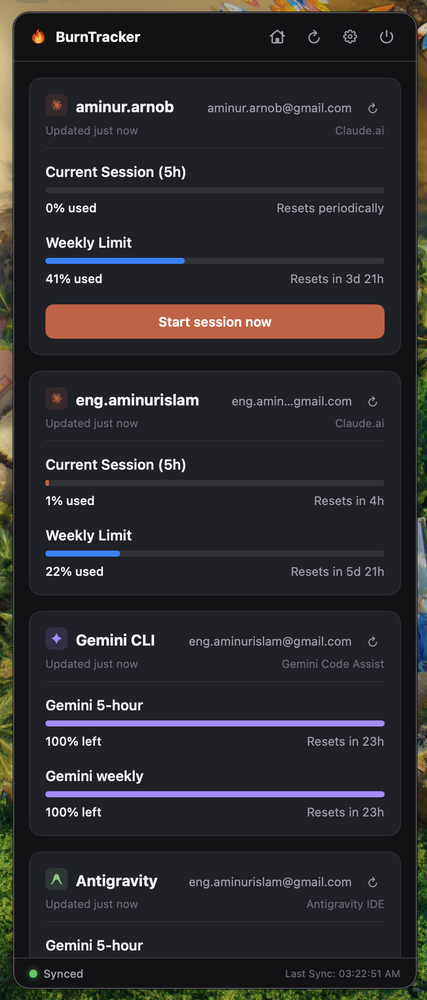

Lives in the menu bar
Left-click the burst icon to toggle the widget; right-click for quick actions. The Dock icon hides itself when minimized.
A beautiful, lightweight menu bar widget that tracks your rolling 5-hour session and weekly limits across every Claude.ai account — without ever leaving your desktop.
Free & open source · No account or sign-up required

Designed to feel like a native Apple utility — quiet until you need it, glanceable when you do.
Left-click the burst icon to toggle the widget; right-click for quick actions. The Dock icon hides itself when minimized.
Watch Personal, Work, and Enterprise accounts perfectly consolidated in a single, beautiful unified menu layout.
Sync in the background every 5 to 60 minutes — and instantly the moment you open the widget. Your choice.
Supports tracking local CLI quota usage — Gemini API tokens and Command Code credits — right alongside your Claude limits.
Rotate an expired sessionKey or rename an account right in the list. Changing a key re-validates it automatically.
For an idle account, open a fresh isolated Claude chat straight from the menu bar — its own cookie jar, ready for you to type.
An interactive 30-day spend & token graph read from your local Claude Code logs — hover any day for its exact totals, plus Today / Yesterday / Last 30 Days.
See Claude's pay-as-you-go “extra usage” balance right on the card — spent vs. monthly limit — the moment you enable usage credits.
sessionKeyIn your browser, open DevTools on claude.ai, find the sessionKey cookie, and copy its value (it starts with sk-ant-sid02-…).
Click the gear icon, give the account a label like Personal or Work, paste the key, and hit Add Account.
The widget syncs live and shows your 5-hour session and weekly usage with reset countdowns. Add as many accounts as you like.
Every request goes straight from your machine to Claude.ai — never through a middleman. Your session keys are stored locally in your home directory and are only ever sent to Anthropic's own endpoints.
A signed-yourself, notarization-free build for Apple Silicon & Intel Macs. Or build it from source in under a minute.
Requires macOS 13+ (Ventura) · On first launch, right-click the app and choose Open to bypass Gatekeeper.